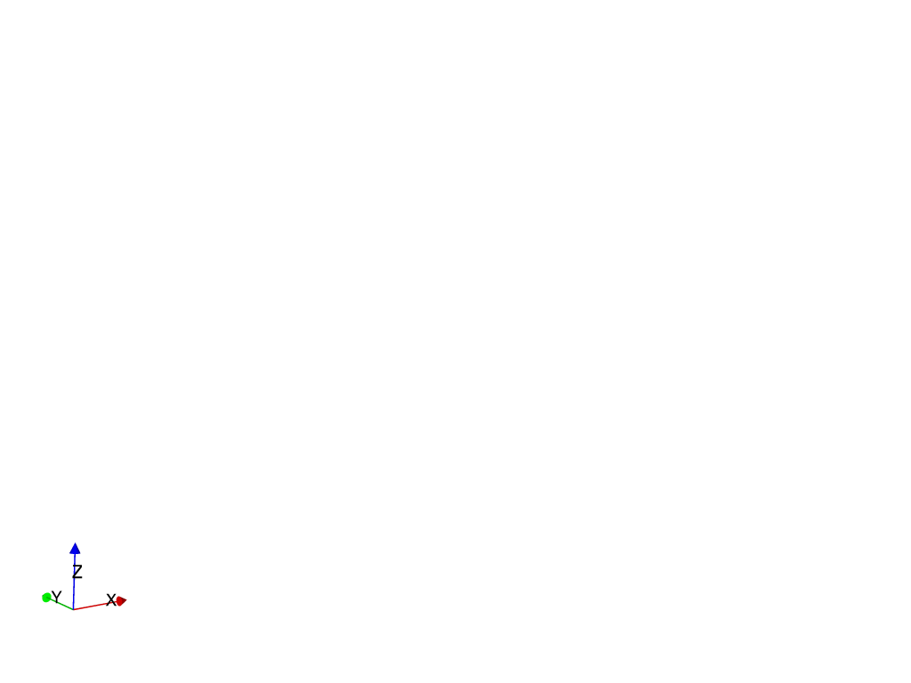

Note
Click here to download the full example code
4a. Comparing interpolators¶
This tutorial demonstrates how different interpolation algorithms can be compared and how the results can be visually inspected.
from LoopStructural import GeologicalModel
from LoopStructural.datasets import load_claudius
from LoopStructural.visualisation import LavaVuModelViewer
import pandas as pd
import numpy as np
data, bb = load_claudius()
data = data.reset_index()
results = {}
for interpolator in ['PLI','FDI']:#,'Surfe']:
model = GeologicalModel(bb[0,:],bb[1,:])
model.set_model_data(data)
strati_pli = model.create_and_add_foliation('strati',
interpolatortype=interpolator,
nelements=1e4,
solver='pyamg'
)
viewer = LavaVuModelViewer(model)
for name, result in results.items():
viewer.add_isosurface(result,
slices=[0,-60,-250,-330],
paint_with=result,
name=name)
viewer.rotate([-85.18760681152344, 42.93233871459961, 0.8641873002052307])
viewer.display()
Total running time of the script: ( 0 minutes 5.464 seconds)